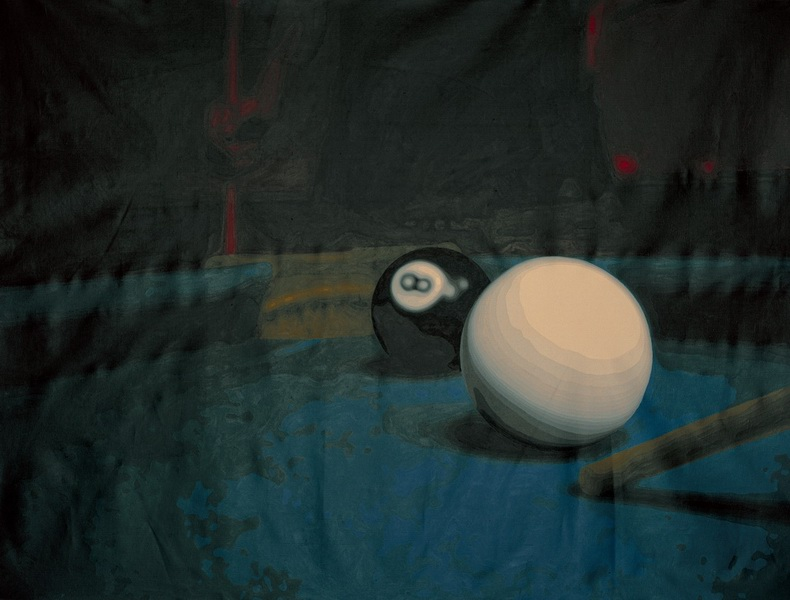

国际运气 International Luck
布面丙烯 Acrylic on canvas
该作品是艺术家“国际运气”“国际酵母”等一系列创作的其中之一，亮相于2002年上海双年展。台球，作为一种娱乐与赌注的项目，其中自有能力与运气所在，艺术家则选择了这样一种创作主题进行叙述， 对于当代艺术进行了隐喻式的阐释。
This work is part of a series of artworks named " International luck" and "International yeast" presented at the Shanghai Biennale in 2002. Billiards becomes a kind of project for entertainment and hazard based on ability and luck. The artist has chosen a creative theme to carry out a narrative discourse: he presents an illuminative metaphor for the status of contemporary art.
